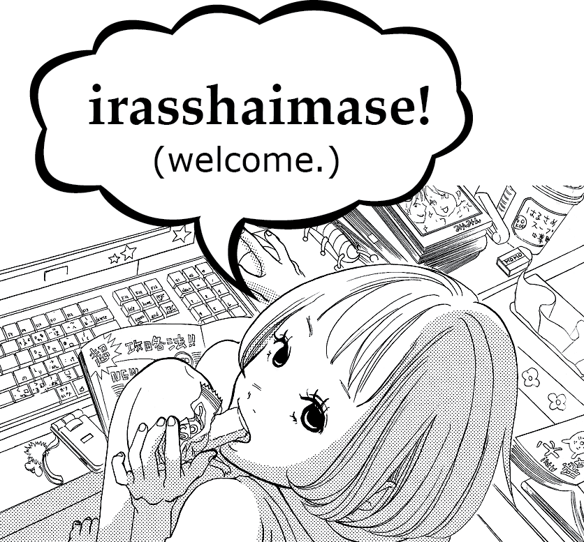

Click to expand.
Introduction: Josei Beat's name is inspired by, but independent of, the Viz media former publication Shojo Beat published from 2005-2009. Josei is a blossoming genre of manga (and anime) tailored towards young and adult women. As the popularity of manga grows world-wide, so too does the portion of female readership. The shojo genre (aimed at young girls and teenagers), in particular, has received increasing attention and constitutes a considerable portion of manga consumed by current-day non-Japanese readers of Japanese media. We believe josei manga also deserves an English-speaking outlet dedicated to shining a spotlight on its works and fostering a tight community of josei fans.
Check out our tweets here!